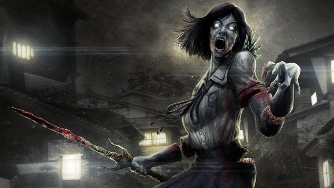
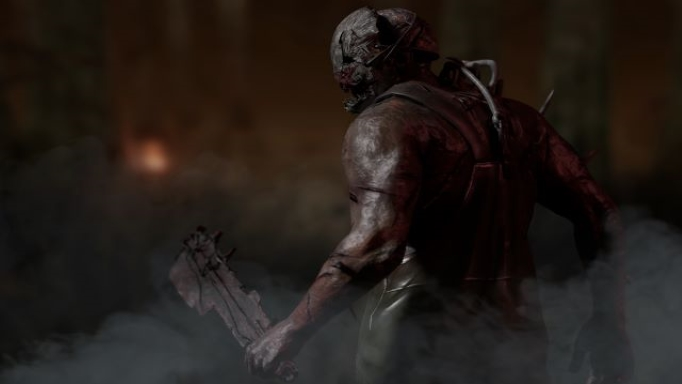

Web blog de Dead by Daylight
TOP: Los 5 mejores asesinos de Dead by Daylight
Puesto 5: Oni
Kazan Yamaoka buscó devolver la gloria a la cultura samurái y se embarcó en un oscuro
peregrinaje para librar a Japón de impostores.
Mató a través de colinas y valles, playas y bosques.
Los asesinatos fueron brutales, crueles y morbosos.
Humilló a granjeros y guerreros por igual, arrancándoles los moños y despojándolos de sus armaduras.
Su rabia, sed de sangre y perversa deshonra no conocían límites.
Los monjes creían que estaba poseído por algo de otro mundo.
Se hizo conocido como "Oni-Yamaoka", el Samurai Demonio.
Poder: La ira de Yamaoka
Absorbe los orbes de sangre que dejan los supervivientes heridos para construir la ira de Yamaoka.
Cuando esté completamente cargado, desata Blood Fury para cargar a una velocidad vertiginosa con
Demon Dash y derriba a los sobrevivientes con un único y poderoso golpe.
Puesto 4: La Espíritu

Rin Yamaoka llegó a casa y encontró pedazos de su madre esparcidos por el suelo.
Le cortaron las extremidades, le abrieron el pecho para revelar una caja torácica rota.
Una Katana se derrumbó, mordiendo el antebrazo de Rin.
Su padre empuñaba la espada con una expresión estoica.
Ella gritó para que se detuviera, pero él siguió cortando.
Agarrando la carne suelta de su abdomen, sintió que la rabia burbujeaba en su interior.
La oscuridad susurró, prometiendo sangre y venganza. Le haría pagar, en esta vida o en la siguiente.
Poder: La maldición de Yamaoka
Yamaoka's Haunting activa un Phase Walk, durante el cual tanto La Espíritu como los sobrevivientes se
vuelven invisibles entre sí. Mientras cambia de fase, La Espíritu se mueve a velocidades elevadas,
rastreando a los sobrevivientes a través de sus marcas de rasguños y varias señales de audio.
Los sobrevivientes no sabrán qué los golpeó.
Puesto 3: El Deterioro
Para comprender la condición humana, uno debe elevarse por encima de ella.
Talbot Grimes fue un químico escocés cuya ambición desenfrenada lo elevó a alturas imponentes y mínimos
devastadores. Lo que comenzó como la curiosidad de un niño se volvió mortal después de experimentar
con la dedalera venenosa. Durante días, se acostó en la cama, purgando todo lo que comía.
Cuando se recuperó, no fue el miedo lo que se apoderó de él, sino la fascinación.
Había algo mágico en cómo una sola flor podía afectarlo tan drásticamente. Poco sabía...
Poder: Corrupción deteriorada
Usa fichas para iniciar un Rush de alta velocidad, durante el cual Deterioro no puede atacar.
Después de chocar con una superficie, El Deterioro puede usar otra ficha para iniciar un Rush Letal
que puede terminar con un ataque rápido. En cualquier Rush que no sea el primero, puede atacar.
Deterioro puede encadenar tantos Rushes como tokens tenga disponibles,
una herramienta ideal para aplicar presión.
Puesto 2: La Enfermera
Con un esposo fallecido y sin medios para mantenerse, Sally Smithson se vio obligada a tomar el
único trabajo que podía: enfermera en el Asilo Crotus Prenn.
Después de dos décadas de presenciar los horrores internos, su mente llegó a sus límites.
Ella buscó salvar a los que sufrían. La única forma de detener la propagación de la infección era
limpiar las impurezas de los enfermos. El personal llegó una mañana de septiembre y encontró a más
de cincuenta pacientes y cuatro miembros del personal asesinados, mientras Sally se mecía
en silencio en un rincón.
Poder: El último aliento de Spencer
Carga un "Blink" para teletransportarte a una gran distancia, ganando rápidamente la habilidad de
cargar un segundo Blink. Una vez que se gastan todos los Blinks cargados,
la enfermera puede optar por atacar antes de que la golpee brevemente con fatiga.
Puesto 1: El Trampero

Evan MacMillan admiraba la forma en que su padre dirigía la finca.
Cuando la salud mental de Archie MacMillan comenzó a desintegrarse,
Evan lo protegió de la manada que buscaba su fortuna. Sin importar lo que su padre pidiera,
Evan lo haría. Al menos por un tiempo. Los trabajadores pronto se dieron cuenta de que la
crueldad del hijo era aún más profunda que la del padre. Nunca probaron que Evan condujo a
más de cien hombres a esos túneles oscuros antes de detonar los explosivos y sellarlos a su destino.
Poder: Trampa para osos
Comience una prueba con 2 trampas para osos, con 6 trampas para osos adicionales que aparecen
aleatoriamente en todo el mapa. El trampero solo puede llevar 2 trampas para osos a la vez.
Los sobrevivientes pueden quedar atrapados en una trampa para osos e intentar escapar o ser
liberados por un compañero de equipo.
Si un sobreviviente está sano, ser atrapado en una trampa para osos lo pondrá en estado lesionado.
Un asesino totalmente imparable, más aún si usa la mejora "Mandibulas Acolchadas". El reconocido
streamer "TheCatAvila" es un claro ejemplo de el potencial que se le puede sacar a este asesino.